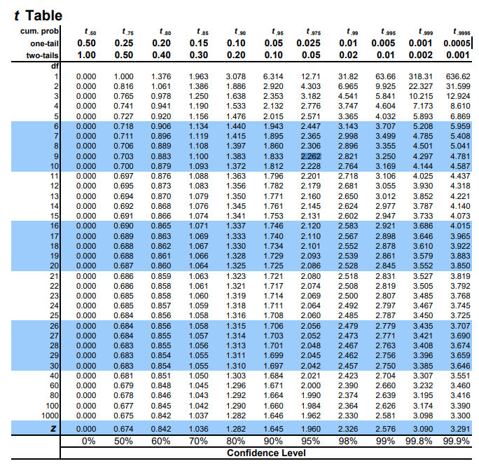
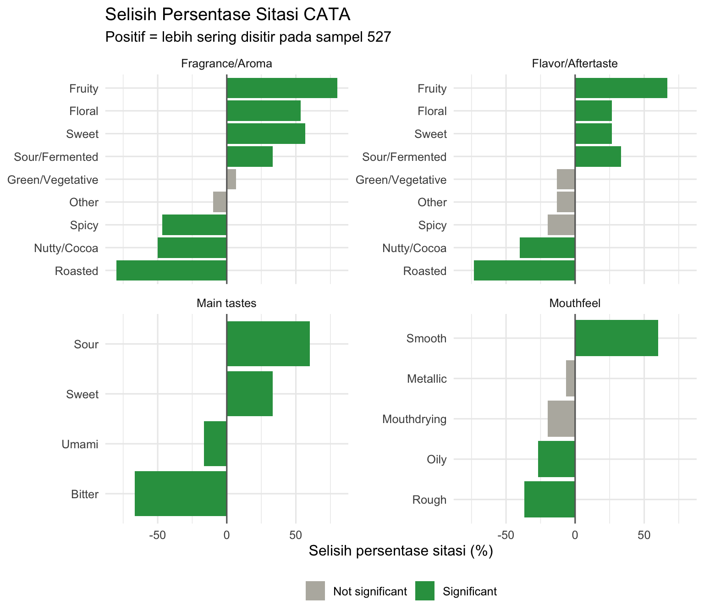
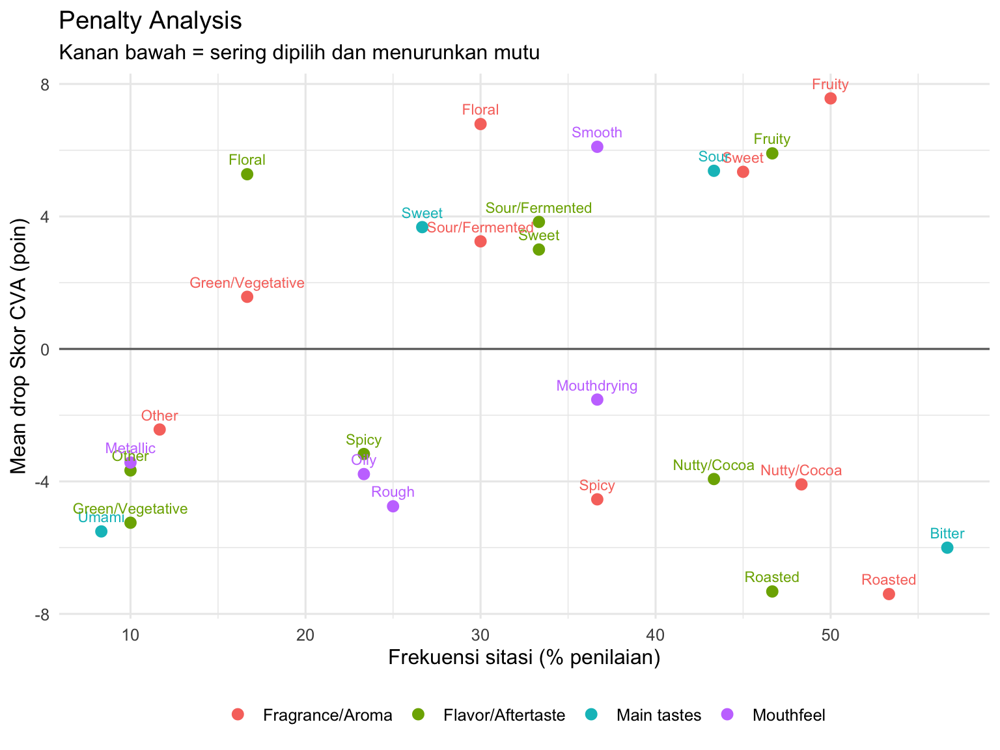

library(tidyverse) # dplyr, tidyr, ggplot2, stringr, forcats, purrr
library(readxl)
library(rstatix) # uji t, Cochran's Q, koreksi nilai p, ukuran efek
library(ggwordcloud)
library(knitr)
theme_set(theme_minimal(base_size = 12))7 Coffee Cupping dengan Coffee Value Assessment
Paired t-test, Cochran’s Q, dan penalty analysis untuk dua sampel kopi
7.1 Tujuan Pembelajaran
Setelah sesi ini, mahasiswa akan mampu:
| Mengetahui | Memahami | Melakukan |
|---|---|---|
| Tiga jenis data CVA: intensitas, kesan mutu, dan CATA | Mengapa tiap jenis data menuntut uji yang berbeda | Memuat lembar R_* dan menyaring pasangan lengkap |
| Uji t berpasangan (paired samples t-test) untuk data kontinu dan skala 9 titik | Mengapa intensitas tinggi tidak sama dengan mutu tinggi | Menjalankan seluruh T-test sekaligus dengan rstatix |
| Cochran’s Q untuk data biner berulang | Mengapa Cochran’s Q pada dua sampel setara dengan uji McNemar | Menguji seluruh deskriptor CATA dan mengoreksi nilai p |
| +++ Mengenai penalty analysis | Membuat grafik CATA citation frequency difference |
7.2 Sekilas tentang Data CVA
Coffee Value Assessment dari form descriptive dan affective menghasilkan tiga jenis data yang berbeda sifatnya, sehingga memerlukan tiga jenis analisis:
| Sheet | Isi | Sifat data | Uji |
|---|---|---|---|
R_Deskriptif |
Intensitas tujuh atribut | Kontinu, skala tidak terstruktur 0–15 | Paired samples t-test) |
R_Afektif |
Kesan mutu (Impression of quality) delapan bagian + Skor_CVA |
Skala 9 titik, bilangan bulat | Paired samples t-test |
R_CATA |
Deskriptor dipilih atau tidak | Biner (0/1), berulang pada panelis yang sama | Cochran’s Q |
Penilaian deskriptif menjawab “seberapa kuat” atribut yang dinilai, sedangkan penilaian afektif menjawab “seberapa bermutu menurut saya”. Skor acidity 12 pada bagian deskriptif berarti keasamannya terasa kuat, bukan bahwa keasaman itu enak. Kedua hal itu sengaja dipisahkan tidak seperti form SCA cupping (2004).
Pada praktikum ini, setiap panelis hanya menilai dua buah sampel, sehingga seluruh pengujian di acara ini bersifat berpasangan. Ingat, yang diuji adalah selisih kedua sampel pada atribut X dari tiap panelis, bukan selisih antara dua kelompok orang.
Cupping score pada kolom Skor_CVA dihitung dengan persamaan SCA Standard 104-2024:
\[ \text{Skor CVA} = 0{,}65625 \times \sum_{i=1}^{8} s_i + 52{,}75 - 2(u_{\text{non-uniform}}) - 4(d_{\text{defective}}) \]
7.3 Library dan Loading Data
Jika gagal, install librarynya dengan install.packages('nama-library').
# urutan sampel mengikuti sheet 'Setup': Sampel 1 lalu Sampel 2
urutan_sampel <- c("527", "381")
desk_mentah <- read_excel("assets/data/CVA_Contoh_Data_Simulasi.xlsx",
sheet = "R_Deskriptif")
afek_mentah <- read_excel("assets/data/CVA_Contoh_Data_Simulasi.xlsx",
sheet = "R_Afektif")
cata_mentah <- read_excel("assets/data/CVA_Contoh_Data_Simulasi.xlsx",
sheet = "R_CATA")
str(desk_mentah)tibble [60 × 12] (S3: tbl_df/tbl/data.frame)
$ Panelis : chr [1:60] "P01" "P01" "P02" "P02" ...
$ Urutan : num [1:60] 1 2 1 2 1 2 1 2 1 2 ...
$ Sampel : chr [1:60] "527" "381" "527" "381" ...
$ Kopi : chr [1:60] "Ethiopia natural (light roast)" "Robusta Temanggung (dark roast)" "Ethiopia natural (light roast)" "Robusta Temanggung (dark roast)" ...
$ Terisi : num [1:60] 1 1 1 1 1 1 1 1 1 1 ...
$ Fragrance : num [1:60] 7 13 6 10 11 8 8 9 8 8 ...
$ Aroma : num [1:60] 10 7 7 9 5 8 7 11 13 9 ...
$ Flavor : num [1:60] 7 10 10 11 9 7 12 8 8 9 ...
$ Aftertaste: num [1:60] 7 11 7 6 8 6 6 8 9 9 ...
$ Acidity : num [1:60] 11 2 11 5 10 4 12 8 12 5 ...
$ Sweetness : num [1:60] 4 6 8 6 8 8 8 5 7 8 ...
$ Mouthfeel : num [1:60] 7 8 10 8 6 8 9 10 5 11 ...head(desk_mentah)Sheet R_* sudah disiapkan untuk format R: satu baris per panelis × sampel, tanpa header bertingkat. Sheet Afektif, Deskriptif, dan CATA adalah format untuk mengisi, tidak bisa langsung dibaca oleh R.
Format data dapat diakses pada file CVA_Template_Input.xlsx.
7.3.1 Menyiapkan data
Sebuah hal yang perlu dilakukan adalah menetapkan sampel sebagai faktor untuk dilakukan pengujian t-test.
rapikan <- function(df) {
df %>%
mutate(Sampel = factor(as.character(Sampel),
levels = urutan_sampel)) %>%
arrange(Panelis, Sampel) %>%
as.data.frame()
}
desk <- rapikan(desk_mentah)
afek <- rapikan(afek_mentah)
cata <- rapikan(cata_mentah)
data.frame(lembar = c("Deskriptif", "Afektif", "CATA"),
baris = c(nrow(desk), nrow(afek), nrow(cata)),
panelis = c(n_distinct(desk$Panelis), n_distinct(afek$Panelis),
n_distinct(cata$Panelis)))kopi <- desk %>%
distinct(Sampel, Kopi) %>%
as.data.frame()
kopi7.4 Mengapa Paired T-test?
Setiap panelis menilai kedua sampel. Artinya skor (e.g. afektif, deskriptif) untuk 527 dan 381 pada panelis yang sama selalu berikatan. Keduanya berasal dari orang yang sama, dengan asumsi bahwa orang tersebut memiliki threshold dan cara memakai skala yang sama.
Uji paired t-test memproses asumsi itu dengan tidak membandingkan dua kelompok yang berbeda (e.g. nilai afektif Golongan I dengan Golongan IV), melainkan menghitung selisih di dalam tiap panelis / within-subject difference (e.g. Andi pada sampel 527 vs Andi pada sampel 381), lalu menguji apakah rata-rata selisih itu berbeda dari nol:
\(H_0\): \(\mu_d = 0\), rata-rata selisih sama dengan nol
\(H_1\): \(\mu_d \neq 0\)
\[ d_i = x_{i,527} - x_{i,381}, \qquad t = \frac{\bar{d}}{SE}, \qquad SE = {SD / \sqrt{n}}, \qquad db = n - 1 \]
| Independent T-test | Paired T-test | |
|---|---|---|
| Asumsi | Dua kelompok orang yang berbeda (e.g. Golongan I vs Golongan IV) | Satu kelompok orang, dua kondisi |
| Yang masuk ke penyebut | Variasi antar panelis + variasi antar sampel | Variasi selisih kedua sampel |
| Derajat bebas | \(2n - 2\) | \(n - 1\) |
Paired T-test kehilangan separuh derajat bebas, tetapi menghilangkan seluruh variasi antar panelis dari penyebutnya. Contohnya, panelis A terbiasa memberi skor 6–7 sementara panelis B memberi skor 4–5 untuk kopi yang sama, sehingga variasi antar panelis jauh lebih besar daripada variasi selisih kedua skor tersebut. Kelebihan inilah yang membuat paired t-test cocok dilakukan pada kasus ini.
Analoginya sama dengan memasukkan panelis sebagai blok pada two-way ANOVA.
7.5 Penilaian Deskriptif: Intensitas
atribut_desk <- c("Fragrance", "Aroma", "Flavor", "Aftertaste",
"Acidity", "Sweetness", "Mouthfeel")
desk_panjang <- desk %>%
select(Panelis, Sampel, all_of(atribut_desk)) %>%
pivot_longer(all_of(atribut_desk),
names_to = "atribut", values_to = "intensitas") %>%
mutate(atribut = factor(atribut, levels = atribut_desk)) %>%
arrange(atribut, Sampel, Panelis)uji_desk <- desk_panjang %>%
group_by(atribut) %>%
t_test(intensitas ~ Sampel, paired = TRUE, detailed = TRUE) %>%
add_significance("p")
efek_desk <- desk_panjang %>%
group_by(atribut) %>%
cohens_d(intensitas ~ Sampel, paired = TRUE) %>%
select(atribut, dz = effsize)
rata_desk <- desk_panjang %>%
group_by(atribut, Sampel) %>%
summarise(rata = mean(intensitas), .groups = "drop") %>%
pivot_wider(names_from = Sampel, values_from = rata)
uji_desk %>%
select(atribut, selisih = estimate, conf.low, conf.high,
statistic, df, p, p.signif) %>%
left_join(efek_desk, by = "atribut") %>%
left_join(rata_desk, by = "atribut") %>%
relocate(all_of(urutan_sampel), .after = atribut) %>%
mutate(across(where(is.numeric), ~ round(.x, 3)))Perhatikan fungsi t_test() yang ada di uji_desk. Fungsi ini menjalankan pengujian untuk seluruh atribut sekaligus karena datanya sudah dikelompokkan dengan group_by(). paired = TRUE memberikan \(d_z\), yaitu rata-rata selisih (\({\bar{d}}\) ) dibagi simpangan baku selisih (\(SD\)).
Tabel yang didapatkan, dapat dibaca sebagai: selisih adalah \({\bar{d}}\) . statistic adalah t-hitung, yang mana dapat dihitung dengan menggunakan t-tabel. Jika db-nya = 29, pada two-tails dengan \(\alpha\) = 0.05, maka nilainya adalah 2.045. Sedangkan, confidence interval low/high (conf.low/.high) didapatkan dari nilai \(\bar{d} \pm t_{tabel} \times SE\).

7.6 Penilaian Afektif: Kesan Mutu
atribut_afek <- c(atribut_desk, "Overall")
afek_panjang <- afek %>%
select(Panelis, Sampel, all_of(atribut_afek)) %>%
pivot_longer(all_of(atribut_afek),
names_to = "atribut", values_to = "mutu") %>%
mutate(atribut = factor(atribut, levels = atribut_afek)) %>%
arrange(atribut, Sampel, Panelis)
uji_afek <- afek_panjang %>%
group_by(atribut) %>%
t_test(mutu ~ Sampel, paired = TRUE, detailed = TRUE) %>%
add_significance("p")
efek_afek <- afek_panjang %>%
group_by(atribut) %>%
cohens_d(mutu ~ Sampel, paired = TRUE) %>%
select(atribut, dz = effsize)
rata_afek <- afek_panjang %>%
group_by(atribut, Sampel) %>%
summarise(rata = mean(mutu), .groups = "drop") %>%
pivot_wider(names_from = Sampel, values_from = rata)
uji_afek %>%
select(atribut, selisih = estimate, conf.low, conf.high,
statistic, df, p, p.signif) %>%
left_join(efek_afek, by = "atribut") %>%
left_join(rata_afek, by = "atribut") %>%
relocate(all_of(urutan_sampel), .after = atribut) %>%
mutate(across(where(is.numeric), ~ round(.x, 3))) %>%
as.data.frame()7.6.1 Hinge Question
Sebelum melanjutkan, jawablah: Pada atribut Flavor, intensitas kedua sampel sama (8,77 dan 8,63; \(p\) = 0,74), tetapi kesan mutunya berbeda sangat jauh (7,37 dan 5,37; \(p < 0{,}001\)). Manakah penjelasan yang benar?
- Ada kesalahan input, karena kedua hasil seharusnya sejalan
- Kekuatan flavor kedua kopi sama, tetapi panelis menilai kesan mutu flavor salah satunya jauh lebih tinggi
- T-test pada bagian deskriptif kurang peka dibandingkan T-test pada bagian afektif
- Kesan mutu flavor pasti ditentukan oleh intensitas flavor
Jawaban: B. Dua kopi tersebut bisa sama-sama kuat flavornya sementara karakter flavornya sangat berbeda, karakter itulah yang dinilai pada bagian affective. Inilah bukti bahwa intensitas dan kesan mutu adalah dua axis yang berlainan, seperti halnya alasan CVA memisahkan form descriptive dan affective. Pilihan C keliru karena kedua uji memakai panelis, rancangan, dan jumlah data yang sama. Yang berbeda adalah pertanyaannya, bukan kepekaan ujinya.
7.7 Skor CVA
Kolom Skor_CVA sudah dihitung di dalam file Excel dengan persamaan SCA-104, sehingga di sini kita hanya akan menguji hipotesisnya.
uji_skor <- afek %>%
t_test(Skor_CVA ~ Sampel, paired = TRUE, detailed = TRUE)
efek_skor <- afek %>% cohens_d(Skor_CVA ~ Sampel, paired = TRUE)
rata_skor <- afek %>%
group_by(Sampel) %>%
summarise(rata = mean(Skor_CVA), .groups = "drop") %>%
pivot_wider(names_from = Sampel, values_from = rata)
uji_skor %>%
select(selisih_CVA = estimate, conf.low, conf.high, statistic, df, p) %>%
bind_cols(dz = efek_skor$effsize, rata_skor) %>%
relocate(all_of(urutan_sampel), .before = selisih_CVA) %>%
mutate(across(everything(), ~ round(.x, 3))) %>%
as.data.frame()Kesimpulan yang bisa ditarik dari paired t-test ini adalah apakah rata-rata selisih \(= 0\) pada skor descriptive dan affective pada masing-masing atribut.
7.8 Data CATA: Cochran’s Q
Data CATA bersifat biner dengan input 1 atau 0 yang diukur berulang pada panelis yang sama untuk kedua sampel. Uji yang biasa dipakai pada data CATA adalah Cochran’s Q. Pertama-tama, data cata perlu diubah terlebih dahulu menjadi format panjang.
cata_panjang <- cata %>%
select(Panelis, Sampel, matches("^(FA|FL|TS|MF)_")) %>%
pivot_longer(matches("^(FA|FL|TS|MF)_"),
names_to = "kode", values_to = "dipilih") %>%
separate_wider_delim(kode, delim = "_",
names = c("bagian", "deskriptor"),
cols_remove = FALSE) %>%
mutate(bagian = recode(bagian,
FA = "Fragrance/Aroma", FL = "Flavor/Aftertaste",
TS = "Main tastes", MF = "Mouthfeel"),
bagian = fct_inorder(bagian),
deskriptor = str_replace_all(deskriptor,
"(?<=[a-z])(?=[A-Z])", "/"))
n_panelis <- n_distinct(cata_panjang$Panelis)
n_panelis[1] 30frek <- cata_panjang %>%
group_by(kode, bagian, deskriptor, Sampel) %>%
summarise(n = sum(dipilih), .groups = "drop") %>%
mutate(persen = 100 * n / n_panelis)# deskriptor tanpa satu pun sitasi tidak dapat diuji
terpakai <- cata_panjang %>%
group_by(kode) %>%
filter(sum(dipilih) > 0) %>%
ungroup()
uji_cata <- terpakai %>%
group_by(kode) %>%
cochran_qtest(dipilih ~ Sampel | Panelis) %>%
add_significance("p")
frek_lebar <- frek %>%
select(kode, bagian, deskriptor, Sampel, persen) %>%
pivot_wider(names_from = Sampel, values_from = persen) %>%
mutate(selisih = .data[[urutan_sampel[1]]] - .data[[urutan_sampel[2]]])
tabel_cata <- uji_cata %>%
select(kode, statistic, df, p, p.signif) %>%
left_join(frek_lebar, by = "kode") %>%
arrange(p)
tabel_cata %>%
select(bagian, deskriptor, all_of(urutan_sampel), selisih,
Q = statistic, p, p.signif) %>%
mutate(across(where(is.numeric), ~ round(.x, 3))) %>%
as.data.frame()Rumus Q pada kasus dua sampel adalah \(Q = (b - c)^2 / (b + c)\), dengan \(b\) = jumlah panelis yang memilih deskriptor hanya pada sampel pertama dan \(c\) = hanya pada sampel kedua. Panelis yang memilih pada kedua sampel, atau tidak memilih sama sekali, tidak menyumbang apa pun pada perhitungan tersebut. Artinya, panelis tersebut tidak memberi informasi apapun tentang perbedaan antar sampel. Konsekuensinya, deskriptor yang sangat sering atau sangat jarang dipilih pada kedua sampel akan sulit mencapai perbedaan signifikan walaupun jumlah panelisnya besar.
Perhatikan penyaringan
sum(dipilih) > 0. Deskriptor yang tidak pernah disitir sama sekali menghasilkan \(0/0\) pada rumus di atas, dan pengujiannya gagal atau mengembalikanNaN. Deskriptor seperti itu dilaporkan apa adanya sebagai “tidak pernah dipilih”.
tabel_cata %>%
mutate(nyata = if_else(p < 0.05, "Significant",
"Not significant"),
label = fct_reorder(deskriptor, selisih)) %>%
ggplot(aes(x = selisih, y = label, fill = nyata)) +
geom_col() +
geom_vline(xintercept = 0, colour = "grey40") +
facet_wrap(~ bagian, scales = "free_y") +
scale_fill_manual(values = c("Significant" = "#2E9E4F",
"Not significant" = "#B8B6AE")) +
labs(title = "Selisih Persentase Sitasi CATA",
subtitle = paste0("Positif = lebih sering disitir pada sampel ",
urutan_sampel[1]),
x = "Selisih persentase sitasi (%)",
y = NULL, fill = NULL) +
theme(legend.position = "bottom")
Bar ke arah kanan menandakan bahwa deskriptor tersebut lebih sering dipilih pada sampel 527, sedangkan arah sebaliknya pada sampel 381. Panjang bar-nya menunjukkan besar selisihnya dalam satuan %.
7.9 Penalty Analysis
Penalty analysis adalah analisis yang mengkombinasikan data CATA dengan hedonik, dengan menghitung mean drop. Mean drop adalah selisih rata-rata skor hedonik antara penilaian yang mencentang deskriptor tertentu dengan yang tidak mencentangnya (1/0). Hasil dengan mean drop negatif besar dan frekuensi CATA tinggi menandakan atribut tersebut perlu untuk diperbaiki. Analisis ini sebetulnya dirancang untuk 3 atau lebih produk. Jika hanya 2 sampel, hasilnya hanya dapat mengindikasikan arah kesukaan.
Uji dengan Cochran’s Q dan penalty analysis sering tertukar karena sama-sama pakai data CATA. Perbedaannya dapat lihat dari tabel berikut:
| Selisih persentase sitasi | Penalty analysis | |
|---|---|---|
| Pertanyaan | Deskriptor mana yang membedakan kedua kopi? | Deskriptor mana yang menaikkan atau menurunkan impresi mutu? |
| Data yang dipakai | CATA saja | CATA dan skor mutu |
| Uji pendamping | Cochran’s Q | Selisih rata-rata mutu (hedonik) saat deskriptor dipilih versus tidak |
| Satuan hasil | Poin persen sitasi | Poin skor mutu (hedonik) |
mutu <- afek %>% select(Panelis, Sampel, Skor_CVA)
penalti <- terpakai %>%
left_join(mutu, by = c("Panelis", "Sampel")) %>%
group_by(kode, bagian, deskriptor) %>%
summarise(n_total = n(),
n_sitasi = sum(dipilih),
persen = 100 * mean(dipilih),
mutu_ya = mean(Skor_CVA[dipilih == 1]),
mutu_tidak = mean(Skor_CVA[dipilih == 0]),
.groups = "drop") %>%
filter(n_sitasi >= 3, n_sitasi <= n_total - 3) %>%
mutate(mean_drop = mutu_ya - mutu_tidak) %>%
arrange(mean_drop)
penalti %>%
select(-n_total) %>%
mutate(across(where(is.numeric), ~ round(.x, 2)))ggplot(penalti, aes(x = persen, y = mean_drop, colour = bagian)) +
geom_hline(yintercept = 0, colour = "grey40") +
geom_point(size = 2.6) +
geom_text(aes(label = deskriptor), vjust = -0.9, size = 3,
show.legend = FALSE) +
labs(title = "Penalty Analysis",
subtitle = "Kanan bawah = sering dipilih dan menurunkan mutu",
x = "Frekuensi sitasi (% penilaian)",
y = "Mean drop Skor CVA (poin)", colour = NULL) +
theme(legend.position = "bottom")
Peringatan penting untuk data dua sampel. Penalty analysis dirancang untuk banyak produk, sehingga pengaruh tiap deskriptor dapat dipisahkan dari identitas produknya. Di sini hanya ada dua kopi, dan deskriptor seperti Roasted nyaris hanya ditemukan pada satu sampel. Akibatnya mean drop deskriptor itu hampir sepenuhnya sama dengan selisih Skor CVA antar sampel, dan yang terbaca bukan “roasted menurunkan mutu” melainkan “sampel yang roasted kebetulan skornya lebih rendah”. Dengan rancangan ini, penalty analysis dibaca sebagai gambaran arah (indication of direction), bukan sebagai bukti sebab-akibat. Untuk kesimpulan yang lebih valid, dibutuhkan minimal 4 produk dengan profil beragam.
Penyaringan
n_sitasi >= 3diperlukan karena mean drop yang hanya dihitung dari satu atau dua panelis yang mencentang deskriptor itu, analisisnya akan tidak stabil.
7.10 Menyusun Kesimpulan
Kesimpulan acara ini menjawab empat pertanyaan berurutan:
- Profil intensitas \(\rightarrow\) atribut mana yang intensitasnya berbeda nyata, dan ke arah sampel yang mana?
- Impression of quality \(\rightarrow\) bagian afektif mana yang berbeda, dan berapa selisih Skor CVA beserta confidence interval-nya?
- Profil sensoris \(\rightarrow\) deskriptor CATA mana yang membedakan kedua kopi?
- Penalty analysis \(\rightarrow\) deskriptor CATA mana yang meningkatkan / menurunkan hedonik kedua kopi?
7.11 Latihan (You Do)
7.11.1 Latihan 1: Perbandingan Metode Cochran’s Q dan McNemar
terpakai %>%
filter(kode == "FA_Fruity") %>%
pairwise_mcnemar_test(dipilih ~ Sampel | Panelis)Bandingkan statistik dan nilai p-nya dengan baris FA_Fruity pada tabel_cata. Mengapa hasilnya identik?
7.11.2 Latihan 2: Challenges
- Jalankan uji independent T-test pada Skor CVA, lalu bandingkan lebar confidence interval-nya dengan versi paired t-test:
afek %>% t_test(Skor_CVA ~ Sampel, paired = FALSE, detailed = TRUE)Mengapa versi paired t-test ini menghasilkan bukti lebih kuat padahal datanya persis sama?
- Hitung korelasi antara selisih intensitas Acidity dan selisih Overall liking pada tiap panelis:
selisih_per_panelis <- function(df, kolom) {
df %>%
select(Panelis, Sampel, nilai = all_of(kolom)) %>%
pivot_wider(names_from = Sampel, values_from = nilai) %>%
mutate(selisih = .data[[urutan_sampel[1]]] -
.data[[urutan_sampel[2]]]) %>%
select(Panelis, selisih)
}
inner_join(selisih_per_panelis(desk, "Acidity"),
selisih_per_panelis(afek, "Overall"),
by = "Panelis", suffix = c("_intensitas", "_mutu")) %>%
cor_test(selisih_intensitas, selisih_mutu)Apakah panelis yang merasakan selisih keasaman lebih besar juga memberi selisih kesan mutu lebih besar? Ingat bahwa kedua selisih berada pada skala berbeda, 0–15 dan 1–9, sehingga besarannya tidak dapat dibandingkan langsung meskipun korelasinya sah.
Dalam sesi ini kita telah mempelajari:
- Tiga jenis data CVA: intensitas, kesan mutu (impression of quality), dan CATA, serta alasannya mengapa masing-masing menggunakan uji yang berbeda
- Paired t-test untuk seluruh atribut sekaligus dengan rstatix
- Bahwa intensitas dan affective adalah dua sumbu berbeda, seperti terlihat pada atribut Flavor
- Cochran’s Q untuk data CATA, kesetaraannya dengan uji McNemar pada dua sampel, dan penanganan deskriptor tanpa sitasi
- Penalty analysis dengan data CATA dan skor CVA
- Perbedaan antara selisih persentase sitasi dan penalty analysis, serta mengapa penalty analysis pada dua sampel hanya dibaca sebagai gambaran arah